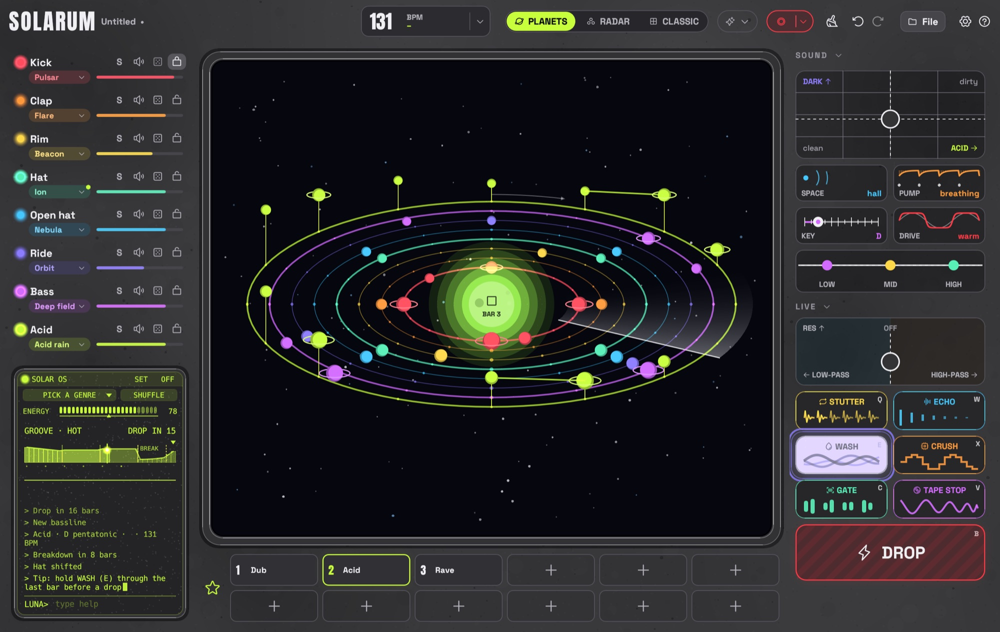

01
Board
Open Solarum and you're in the cockpit: start a new project, pick up where you left off, or let Luna fly.
Techno from another planet. Board the ship, fly into a little solar system and make beats by touching planets. Easy, beautiful, for everyone.
No timeline, no mixer, no menus full of words you don't know. Solarum is a spaceship, and your beat is the solar system outside the window.
Open Solarum and you're in the cockpit: start a new project, pick up where you left off, or let Luna fly.
Every sound is an orbit round the sun, every beat a planet. A beam of light sweeps round once a bar and lights them up. Touch the sky and a planet appears. The sun is the play button.
The little robot on board rolls a fresh rhythm whenever you ask, and can take the controls to play a whole set: build-ups, breakdowns, drops. It listens before every change, brings the theme back before the drop, and learns what you like from a thumb up or down.
Every sound has its own colour. Bass and synth planets float on stalks, the higher the note, the higher they float. Drag them and they sing.

Switch on SOLAR OS, the little computer on board, and Luna waves and takes over. Jump in any time, or just listen.
acid, drop, mood dark, bpm 135, seed tom for a beat from any word, or ask for a joke. help opens Luna's manual: click a command and it runs.Dub, Minimal, Melodic, Hypnotic, Electro, Peak time, Acid, Rave, Industrial, Hard. Each with its own tempo, sounds and rules.
Kicks, claps, hats, rides, seven basses and a synth from 303 to pads, all made live and named for space. Draw, record or import your own and shape them right in the app.
One fader is the whole arrangement. Press DROP for a two-bar build-up, a breath of silence, then everything hits.
Stutter, echo, wash, crush, gate, tape stop and a filter pad. Hold a button, let go to come back.
One button records everything you hear and saves it as a WAV, ready to share.
LIGHTS and FACE for the big screen or a projector: shockwaves, star fields and a head that screams on the drop.
Every change can be undone, nothing goes off-beat, and your work is saved automatically. Not even a crash in the middle of saving breaks a project.
Plug one in and play the sounds and transpose the bassline live, even while Solarum runs.
Open source under MIT. No account, no tracking, no ads. Projects friends send you are checked before they play.
Solarum is so new it doesn't carry Apple's or Microsoft's paid stamp yet, so your computer asks once before the first start. Here's how, step by step. After that it opens like any other app.
SHA256SUMS.txt to check your download. Older versions and release notes are on the releases page. Want to build it yourself? You need Rust 1.96 or newer, then cargo run --release.
Solarum is a free techno drum machine and beat maker for Mac and Windows. Your groove is a little solar system: every track is an orbit round the sun, every step a planet, and a beam of light sweeps round once a bar. Kick, clap, rim, hats, ride, bass and a 303-style acid line are all synthesized – no samples needed.
Yes. Solarum is free and open source under the MIT license. There is no account, no ads and no tracking.
Solarum runs on macOS 11 or later (Apple Silicon and Intel) and on 64-bit Windows 10 and 11. The download is a few megabytes. Linux, iPad and Android tablets are planned; phones are not supported.
No. You pick a vibe and a mood like Dark, Euphoric or Dreamy instead of scales and chords, and SHUFFLE rolls a groove that follows the rules of techno. If you do know what you're doing, you still get per-step accents, slides and probability, tune and decay per track, a master EQ, MIDI in and WAV recording.
Luna is the little robot inside SOLAR OS, Solarum's auto mode. Switch it on and Luna plays an endless set like a DJ: grooves that change, breakdowns, build-ups and drops. It picks every change by ear, learns your taste from a thumb up or down, and answers commands like acid, drop, mood dark or bpm 135.
Ten vibes: Dub, Minimal, Melodic, Hypnotic, Electro, Peak time, Acid, Rave, Industrial and Hard – each with its own tempo, sounds and pattern rules.
Yes. The record button records everything you hear – your beat, the auto mode, songs and effects – as a WAV file. You can also draw or record your own sounds and cut them like a sampler, and play everything from a MIDI keyboard.
Solarum doesn't carry Apple's paid developer signature yet, so macOS asks once. Open System Settings → Privacy & Security, scroll down and click Open Anyway next to Solarum. After that it opens with a normal double-click. Step by step ↑
Solarum is young and changes fast, so things will move around and some will break. Feedback, ideas and help are more than welcome.